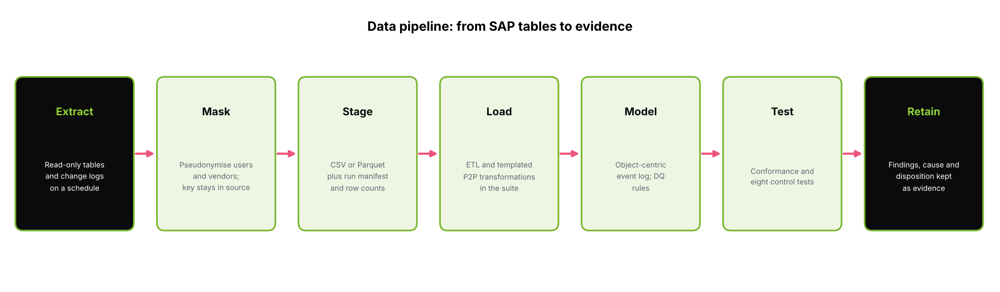
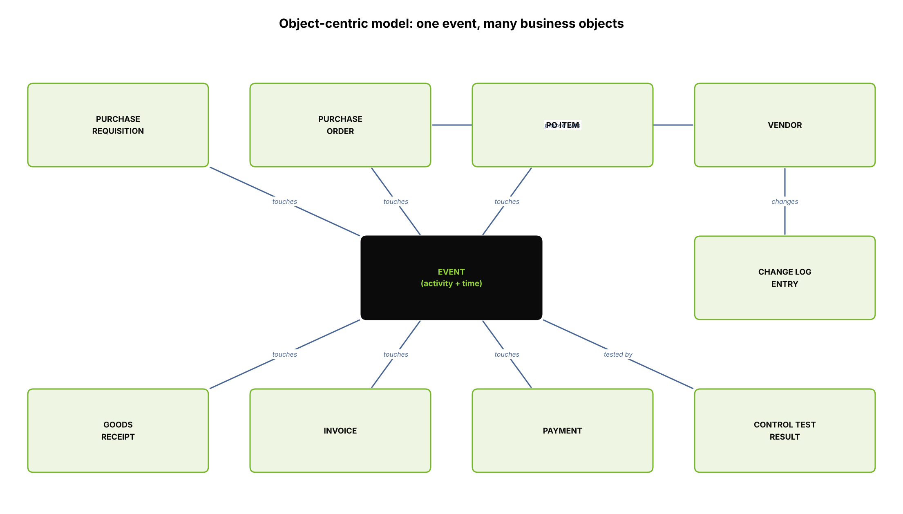

0. The OmniVerse Energy story (fictional case)
Fictional company. OmniVerse Energy Ltd. does not exist. Every number comes from synthetic demo data built to show the method.
The old way. Each year OmniVerse Energy, an imagined energy company with five plants and one small audit team, pulled 60 purchase orders out of 12,000, checked them by hand and reported no material findings. Six weeks of work, out of date on the day it was signed.
What the sample could not see. A random sample of 60 is almost sure to catch a widespread problem (720 payments without goods receipt: about 98%). It has about a 50% chance of catching 140 after-the-fact orders, about 11% for 23 duplicate payments and about 4% for 9 self-approved orders. Sampling finds what is common and misses what is rare, and rare is where fraud lives.
The wake-up call. A supplier asked why a payment went to a new bank account. The bank change and the payment sat in two systems, so audit never saw them together. The board asked: how many more have we not looked at?
The shift. OmniVerse Energy moved to continuous control audit on SAP Signavio: the process is read from the event log, control rules run on every transaction, each deviation becomes a task with an owner, and AI suggests while people decide. The first full run tested all 12,000 orders: only 71% followed an approved path, and 1,075 (9%) failed at least one test.
Sample-based audit and continuous control audit side by side
| Aspect | Traditional sample-based audit | Continuous control audit |
|---|
| Coverage | A sample of transactions, often a small share | Every transaction tested |
| Timing | Periodic (quarterly or yearly), looking back | Ongoing, close to real time |
| Detection speed | Deviations found months after they happen | Deviations flagged within days or hours |
| Evidence collection | Manual extracts, spreadsheets, emails | Automatic from the system event log |
| Process view | Fragmented, one document or report at a time | End-to-end view of how the process really runs |
| Risk approach | Reactive: the issue is found after the damage | Proactive: patterns and root causes show where to act |
| Control testing | Tests the controls someone chose to look at | Every control rule runs on all cases, repeatably |
| Effort | High, repeated for each audit cycle | High to set up, then low per cycle |
| Result | A report with sampled findings | A live view with a task and a recorded decision for each deviation |
| Role of the auditor | Collects and checks evidence | Investigates exceptions and judges the cause |
One blueprint, nine audit cases
| Audit area | Old way (sample-based) | Continuous control audit (synthetic data) | First action |
|---|
| Procurement (P2P) | 60 purchase orders sampled; three-way match checked by hand | 720 paid without goods receipt; 23 possible duplicate payments; 9 self-approved orders | Block payment when the goods receipt is missing; check duplicates at entry |
| Finance (record-to-report) | Year-end sample of journals; close checklist reviewed once | 18 journals posted by their approver; 80 back-dated near close; 130 reversals without an original | Lock posting dates after cut-off; second review for sensitive accounts |
| Revenue (order-to-cash) | Sample of invoices matched to deliveries; credit blocks read from an exception report | 180 delivered despite a credit block; 180 invoiced without delivery; 95 credit notes above limit | Hard-stop delivery while a credit block is open |
| HR (hire-to-retire) | Payroll tested for a sample of employees; leavers reconciled yearly | 120 paid after exit; 300 pay changes with no approval; 14 bank changes approved by the same person | Stop payroll automatically on the exit date |
| Supply chain (plan-to-deliver) | Stock counts plus a sample of adjustments | 90 stock adjustments without a second approver; 240 goods issues without an order; 360 orders rescheduled repeatedly | Second approver above the adjustment limit; block goods issue without an order |
| ESG and sustainability | Annual report sampled once, after the draft was written | 300 metrics changed after approval; 160 without a supplier declaration; 140 with no source link | Lock approved metrics; mandatory source link |
| Customer experience (CX) | Sample of complaints and a monthly service-level report | 330 breached the service level; 240 reopened repeatedly; 180 refunds without approval | Service-level alerts before breach; refund approval as a hard step |
| IT (service and access) | Sample of change tickets; yearly access review | 180 changes released before approval; 420 emergency changes; 480 privileged access without review | Block release until approved; quarterly privileged-access review |
| Master data | Sample of vendor and customer changes | 70 bank-detail changes followed by payment; 140 duplicates; 300 unreviewed changes to sensitive fields | Callback check before a bank change takes effect; mandatory duplicate check |
Continuous auditing does not remove the auditor: a person confirms the cause and decides. It needs trusted data and clear control rules first. Try the cases in the interactive demo.
0b. Which component does what (layered view)
The demo's Simulate screen lights up each box as cases flow through. Status follows public SAP material; confirm with SAP.
| Layer | Component | Status | What it does | Live counter |
|---|
| 1 Source systems | SAP source systems | Existing system | Hold the transactions and change history for the process (for P2P: purchase orders, goods receipts, invoices, payments). | Events read |
| 2 Extract and mask | Read-only extract and masking | Design choice | Thin extract; personal data masked before load. Options: customer-hosted job, SAP Integration Suite or Datasphere. | Records masked |
| 3 SAP Signavio Process Intelligence | Data pipeline and event log | Available | Turns source tables into an object-centric event log. | Cases built |
| 3 SAP Signavio Process Intelligence | Discovery and variants | Available | Draws the process map and counts every path. | Paths seen |
| 3 SAP Signavio Process Intelligence | Control tests | Available (configuration) | Runs each rule on every case; thresholds are parameters. | Checks run, deviations fired |
| 4 SAP Signavio Process Manager and Governance | Process Manager: target model | Available | Approved paths used to judge conformance. | Share conforming |
| 4 SAP Signavio Process Manager and Governance | Process Governance: workflow | Available | Each flagged case becomes a task; closing needs a recorded cause. | Tasks raised |
| 5 AI and assistants | Joule / Process Consulting Agent | Available (usage allowance) | Answers questions in plain language on the process data. | Questions answered |
| 5 AI and assistants | AI root-cause analysis | Beta | Suggests where deviations concentrate; a person confirms. | Suggested driver |
| 5 AI and assistants | Agentic risk mining | Roadmap, no commitment | Outside the core path. | Not used |
| 6 Publish and operate | Collaboration Hub | Available | Auditors and process owners read the results. | Live flag rate |
| 6 Publish and operate | SAP Build Process Automation | Optional, separate product | Automates remediation only after approval. | Off in the demo |
| 6 Publish and operate | SAP BTP: identity and hosting | Optional platform | Single sign-on, roles and hosting region. | Roles and region checked |
1. From periodic sampling to continuous assurance
Traditional SAP audit tests a sample once or twice a year. Four weaknesses follow: fragmented process visibility, manual evidence collection, control deviations found late and reactive risk identification. The design below tests every purchase-to-pay transaction on a schedule, keeps evidence by default, and uses AI to assist, never to decide.
Process mining shows what happened. Process intelligence adds the target model, controls, measures, workflow and people to act.
Feature status. Taken from public SAP material; confirm with the vendor. AI root-cause analysis is beta; agentic process and risk mining is roadmap, not a commitment. Neither is in the core path.
2. Reference blueprint

3. Which Signavio component does which job
| Job | Component | Status |
|---|
| Load, transform, model P2P data | Process Intelligence (ETL, templated P2P, object-centric model) | Available |
| Fast first view | Process Insights | Available |
| Target process with risks and controls | Process Manager | Available |
| Share with auditors and owners | Collaboration Hub | Available |
| Route, approve, track deviations | Process Governance | Available |
| Ask questions in plain language | Joule in the suite; Process Consulting Agent | Available (AI allowance applies) |
| Suggest drivers of a deviation | AI-assisted root-cause analysis | Beta |
| Agents that monitor and propose | Agentic process and risk mining | Roadmap |
| Corrective action after approval | SAP Build Process Automation or existing ticketing | Available, separate product |
4. Data pipeline and object-centric model


5. The eight control tests
| ID | Rule |
|---|
| BRL-01 | Payment must follow a matching purchase order, goods receipt and invoice (three-way match) within tolerance. |
| BRL-02 | An invoice must not be paid twice; same vendor, amount and reference within a window is flagged. |
| BRL-03 | The person who creates a purchase order must not approve it. |
| BRL-04 | A purchase order raised after the invoice date is an after-the-fact order and is flagged. |
| BRL-05 | Several orders to one vendor just below the approval threshold within a window are flagged as split orders. |
| BRL-06 | A change to vendor bank details shortly before a payment is flagged for review. |
| BRL-07 | A manual payment-block release is flagged unless approved by a second person. |
| BRL-08 | A price or quantity change after approval above a tolerance is flagged. |
6. Prototype storyboard (15 minutes, synthetic data)
| Step | Minute | Screen | What the audience sees | Synthetic data cue |
|---|
| 1 | 0-2 | Discover | P2P process map from requisition to payment, with volumes | 12,000 POs, 10 company codes (synthetic) |
| 2 | 2-4 | Variants | Top 10 variants; 38% follow the standard path; rework loops highlighted | Variant 1 = standard; variant 7 = invoice before PO |
| 3 | 4-6 | Conformance | Compare with target model; non-conforming cases listed | Conformance rate 71% |
| 4 | 6-9 | Control tests | Three-way match, duplicate payment, SoD, split orders, after-the-fact PO | Seeded: 140 after-the-fact POs; 23 duplicate invoices; 9 SoD conflicts |
| 5 | 9-12 | Investigate | Drill to document; AI suggests drivers (one vendor group, one plant, month-end) | Driver: plant P3 + vendor group V2 |
| 6 | 12-14 | Act | Raise deviation task; approver records cause and disposition | Task routed to process owner |
| 7 | 14-15 | Recommend | Ranked transformation ideas with effect and effort | Enforce PO-before-invoice; add approval limit |
7. Key architecture decisions
| ID | Decision | Decision rationale | Status |
|---|
| ADR-01 | Choose hosting region and confirm attestation reports before any data moves | Residency and assurance are gating; masked data lowers risk in every option | Proposed |
| ADR-02 | Use an object-centric event model for P2P | Avoids duplicated events and wrong counts; matches the many-to-many reality | Proposed |
| ADR-03 | Keep the extract thin and mask personal data before load | Smallest data and risk; key stays in source domain | Proposed |
| ADR-04 | Implement control tests as configuration in the analysis engine | Versioned, owned, auditable; no custom code | Proposed |
| ADR-05 | Use AI as assistive only; keep beta and roadmap features out of the critical path | Human decision stays; design survives feature changes | Proposed |
| ADR-06 | Start with the suite's prebuilt P2P content for the first view, then build the tailored model | Fast first insight; tailored model for control tests | Proposed |
| ADR-07 | Route remediation through the workflow component; automation only after approval | Keeps segregation of duties and an audit trail | Open |
8. Roadmap
| ID | Work package | Transition architecture | Deliverable |
|---|
| WP-01 | Mobilise, scope and hosting decision | TA0 Baseline | Charter, principles, ADR-01 hosting region |
| WP-02 | Target P2P model and control library | TA0 Baseline | Approved BPMN model; list of eight tests with owners |
| WP-03 | Extraction, masking and staging | TA1 Data in | Read-only extract, masking, run manifest |
| WP-04 | Event log and object model | TA1 Data in | Object-centric model; DQ rules live |
| WP-05 | Discovery, variants and conformance | TA2 Insight | Process map; conformance view |
| WP-06 | Control tests and evidence | TA2 Insight | Five tests live; evidence export |
| WP-07 | Deviation workflow and publishing | TA3 Action | Tasks, approval, hub for auditors |
| WP-08 | Conversational and AI-assisted analysis | TA3 Action | Assistant for analysts; root-cause suggestions (GA or beta, flagged) |
| WP-09 | Side-by-side run and handover | TA3 Action | Comparison report; operating model; test library owner |
9. Top risks
| ID | Risk | Score | Mitigation |
|---|
| RK-01 | Hosting region or residency rule not met by the cloud service | 15 | Confirm region and reports first (ADR-01); fallback to masked-only data |
| RK-03 | Source tables incomplete or change log not enabled | 12 | DQ-01 and DQ-08; early extract test |
| RK-04 | Too many false alarms; auditors lose trust | 12 | Tune thresholds; track K-03; start with 5 tests |
10. Beyond P2P: other audits
About four-fifths of the design is reusable: extract, masking, staging, the object-centric pattern, the control library, workflow, evidence and the AI use rule. Each new audit needs its own source data, event model and control tests.
| Audit domain | Process | Main audit question | Signavio fit | Wave |
|---|
| Procurement (P2P) | Requisition to payment | Are we paying only for what we ordered and received, with proper approval? | Strong | Wave 1 |
| Finance (record-to-report) | Journal entry to financial close | Are journals posted, approved and reversed under policy? Is close on time? | Partial | Wave 2 |
| Revenue (order-to-cash) | Order to cash receipt | Are orders, credit holds, deliveries, invoices and receipts consistent? Are credit notes controlled? | Strong | Wave 2 |
| HR (hire-to-retire) | Vacancy to exit, including payroll changes | Are hires, pay changes and exits approved? Is anyone paid after leaving? | Partial | Wave 3 |
| Supply chain (plan-to-deliver) | Demand to delivery and stock | Are stock counts, adjustments and deliveries accurate and authorised? | Strong | Wave 2 |
| ESG and sustainability | Data capture to reported metric | Is reported emissions or safety data complete, traceable and approved? | Limited | Wave 4 |
| Customer experience (CX) | Request or complaint to resolution | Are complaints, refunds and service levels handled as promised? | Partial | Wave 3 |
| IT (service and access) | Incident, change and access request to closure | Are changes approved before release? Are access rights granted and removed on time? | Strong | Wave 2 |
| Master data | Create or change of vendor, customer, material, employee | Are sensitive master-data changes reviewed? Are duplicates controlled? | Strong | Wave 1 |
Signavio fit: Strong = transactional with clear events and templated or P2P-like build. Partial = custom event log or data partly outside SAP. Limited = core test is a data check outside the mining tool (ESG). Design judgement from public product information; validate with the vendor.
11. Sample control tests by domain
Finance (record-to-report)
| ID | Control test | Logic | Fit |
|---|
| AT-FI-1 | Journal posted by its approver | Poster and approver are the same masked user | Strong |
| AT-FI-2 | Back-dated or period-end journal | Posting date far from entry date near close | Strong |
| AT-FI-3 | Unusual manual journal to sensitive account | Manual entry to listed accounts above threshold | Strong |
Revenue (order-to-cash)
| ID | Control test | Logic | Fit |
|---|
| AT-OC-1 | Delivery despite credit block | Goods issue after credit hold and before release | Strong |
| AT-OC-2 | Invoice without delivery | Billing with no matching delivery | Strong |
| AT-OC-3 | Credit note above limit | Credit note larger than policy with no second approval | Strong |
HR (hire-to-retire)
| ID | Control test | Logic | Fit |
|---|
| AT-HR-1 | Pay after exit | Payroll run for a person after termination date | Partial |
| AT-HR-2 | Pay change without approval | Compensation change with no approval event | Partial |
| AT-HR-3 | Hire before approval | Start event before requisition approval | Partial |
Supply chain (plan-to-deliver)
| ID | Control test | Logic | Fit |
|---|
| AT-SC-1 | Stock adjustment without approval | Inventory adjustment above limit with no second user | Strong |
| AT-SC-2 | Goods issue without order | Movement with no linked production or sales order | Strong |
| AT-SC-3 | Long-idle stock | No movement for longer than policy | Strong |
ESG and sustainability
| ID | Control test | Logic | Fit |
|---|
| AT-ES-1 | Emissions figure changed after approval | Metric edited after sign-off | Limited |
| AT-ES-2 | Missing supplier declaration | Supplier above spend threshold with no declaration | Limited |
| AT-ES-3 | Late data submission | Site data submitted after reporting deadline | Partial |
Customer experience (CX)
| ID | Control test | Logic | Fit |
|---|
| AT-CX-1 | Complaint breaches service level | Resolution time above promised level | Strong |
| AT-CX-2 | Repeated reopening | Ticket reopened more than twice | Strong |
| AT-CX-3 | Refund without approval | Refund above limit with no approval | Partial |
IT (service and access)
| ID | Control test | Logic | Fit |
|---|
| AT-IT-1 | Change released before approval | Deployment event before change approval | Strong |
| AT-IT-2 | Access not removed after exit | Active access after leaver date | Partial |
| AT-IT-3 | Emergency change overuse | Share of emergency changes above norm | Strong |
Master data
| ID | Control test | Logic | Fit |
|---|
| AT-MD-1 | Vendor bank change then payment | Bank change within window before payment | Strong |
| AT-MD-2 | Duplicate vendor or customer | Same tax ID or bank account on two records | Strong |
| AT-MD-3 | Master data created and used by one user | Same user creates and first uses a record | Strong |
HR and CX: personal data is heavier. Mask before load, restrict roles and involve the data protection lead before the first extract. ESG: the tool shows whether the data trail is complete and controlled; it does not verify the reported figure.
12. Suggested order
- Wave 1: P2P and master data.
- Wave 2: revenue, supply chain, IT service and access, finance close.
- Wave 3: HR and CX.
- Wave 4: ESG.
Full pack (requirements, data dictionary, interfaces, governance, deck, workbook, full test catalogue): see the full version. All data is synthetic; no client names.